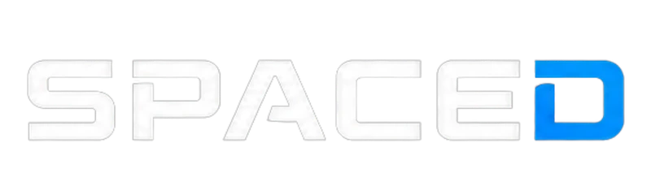

Estratégia
Planejamento para ideias que decolam.

Ideias em órbita
Tecnologia, design e estratégia para levar sua ideia mais longe.
Planejamento para ideias que decolam.
Tecnologia sob medida para o seu negócio.
Soluções que geram valor real.
Mais do que tecnologia
Na SpaceD, unimos estratégia, design e desenvolvimento para criar soluções digitais que impulsionam pessoas, marcas e negócios.